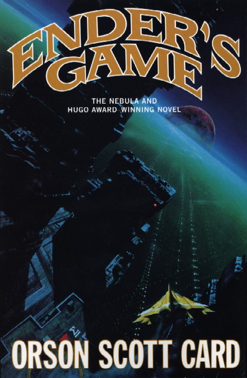

Ender's Game by Orson Scott Card
This book was the first book I ever read non stop and finished in the span of two days. The book kept me involved and wondering what was going to happen for its entire 324 pages. The story is about a kid named Ender who is 5 when he is sent to a orbiting space station to train for war. He is hyper intelligent and immediately becomes one of the greatest strategists in the whole school.

Review:
Considered by some to be the best sci-fi novel ever written, ENDER’S GAME hits the trifecta: deeply emotional and character-driven, brilliantly intellectual, and exciting as all get out.
Review:
Like its hero, Ender’s Game relies on brains more than brute force. An absorbing portrait of Lord Of The Flies-style morality housed in imaginative sci-fi casing.